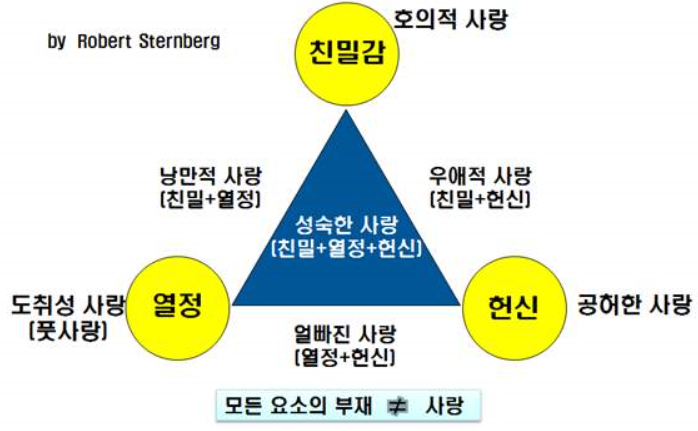

1. 사랑과 정서의 의의
예일대 심리학과 교수 로버트 스턴버그는 사랑의 삼각형 이론을 제시하였다. 이는 사랑이 친밀감, 열정, 헌신이라는 세 가지 요소가 균형을 이루게 도면 성숙한 사랑을 할 수 있게 된다고 하였다. 스턴버그 이전에는 사랑에 관한 논의가 대부분 사랑의 정서적인 측면에서 접근하였다.
정서는 심리학에서 타고난 기질적인 측면이 강하게 작용하게 된다는 특징을 가지며 생애 전반에 걸쳐서 비교적 가장 안정적인 특질로서 이해된다. 이에 사랑을 정서로 이해하고자 하는 이론들은 사랑 또한 정서적 특징을 가지고 있다. 또한 생애 초기에 형성되는 사랑이 생애 전반에 걸쳐서 영향을 미치게 된다.
보울비는 아이가 부모와의 관계를 통해서 사랑의 어떠한 모델을 형성함에 따라 내적 작동모델을 형성한다고 주장하였다. 그는 어렸을 때 형성된 내적 작동모델을 바탕으로 생애 전반 모든 관계를 경험하게 된다고 하였다. 이에 따라 어린 시기에 부모에게 버림받는 경우 또는 학대를 받은 아이는 성인 이후에도 타인과 병리적 관계를 형성하게 될 가능성이 높아진다고 해석했다.
반면 스텐버그는 사랑의 태도적 접근을 제시했다. 사랑이 정서인지와 관련된 근원적 질문에 대해서 스턴버그는 사랑이 정서적이 측면이 존재하긴 하지만 정서보다 태도적 측면을 중심으로 이해해야 한다고 주장하였다. 사랑은 정서가 아니라 변해가는 태도로서 정의를 내렸다.
스텐버그는 어린 시기에 형성된 사랑은 생애 전반에 걸쳐서 모든 사회적 관계에 영향을 미치게 된다는 관점이 아니라고 하였다. 또한 자신의 경험과 그로 인한 변화를 통해서 종합적으로 이루어지는 복합적 과정으로 보았다. 그는 사랑에 대해 태도적으로 보는 것이 합당하고 3요소를 바탕으로 이루어지게 된다고 주장을 했다.
2. 스텐버그 사랑의 3요소
스턴버그가 주장한 이론에서 사랑의 3요소는 다음과 같다.
1) 친밀감이다. 이는 상대방에 대해서 느끼게 되는 애착과 편안함, 애정을 의미한다.
2) 열망으로 무조건적 이끌림, 성적 매력에 매료되는 것을 의미한다.
3) 헌신이며 관계를 지속하고자 하는 의지, 상대방에 대해서 헌신하려는 마음이다.
스텐버그는 이와 같은 세 가지 요소가 있어야 사랑이며, 세가지 요소가 완벽하게 균형을 이루게 되면 완전히 성숙한 사랑이라고 하였다. 이와 같은 세 요소에 대해서 가능한 모든 결합을 시도하게 되면 여덟 가지 하위 요소를 얻을 수 있게 된다. 하위 요소들이 삼각형 이론을 바탕으로 하는 사랑의 분류의 기초가 되는데 삼각형 이론에서 제시되는 이러한 유형들은 극단형을 표현하며 실제 현실에서 친밀감이 없는 열정을 경험하기도 친밀감이 없는 헌신이 나타나기도 한다.
안전한 사랑을 하기 위해서는 친밀, 열정, 헌신이 균형을 갖추고 이루어져 있어야 하며 그 정도가 정삼각형에 가까운 모양을 갖출 수 있어야 한다. 이중 열정은 일시적이고 금방 식기 때문에 뜨겁게 열정을 유지하는 것에서는 어려움이 나타난다. 이러한 생물학적 이유로 인해서 완벽한 사랑이 이루어지는 것은 힘들고 현실에서는 많은 사람들은 친밀과 헌신으로 이루어지는 우애적 사랑에 머물게 된다.
중요한 것은 스턴버그가 제시한 다양한 사랑 유형 중 우애적 사랑, 불완전한 사랑에 해당되었을 때 이에 안주하거나 또는 쉽게 끝내면서 새로운 사랑을 찾아 떠나는 것이 아닌 서로 행복한 관계를 만들기 위해서 노력해야 하며 완전한 사랑을 위해 나아가는 마음가짐이 중요하다. 사랑은 정서가 아니라 변해가는 태도이기 때문에 불완전한 사랑이라고 하더라도 얼마든 더 나은 사랑으로 변해 갈 수 있다. 완전한 사랑을 이해서 노력하고 변화하기 위한 태도를 갖추는 것은 성숙한 사랑법이다.
1) 친밀감
친밀감은 사랑하는 관계에서 나타나게 되는 가깝고 연결되어 있고 결합되어 있다는 느낌을 의미한다. 가까운 관계에서 친밀감이 나타나는 열 가지 지표를 지적하기도 하였다. 사랑하는 사람과의 복지 증진, 함께 행복을 경험하는 것, 존경심을 가지는 것, 상대방에 대한 의지, 서로에 대한 이해, 상대와 자신, 자신의 소유를 나누는 것, 상대에게 정서적 지지를 받고 주는 것, 친밀한 의사소통, 자신의 삶에서 사랑하는 이의 가치를 높게 평가하는 것이다.
2) 열정
열정은 낭만, 신체적 매력, 성적 몰입 등으로 이끄는 욕망을 의미하는데 많은 관계에서 열정의 주요 부분은 성적 욕구를 차지한다. 또 다른 자아존중감, 타인과의 친화, 타인에 대한 지배, 타인에 대한 복종, 자아실현 등 욕구도 열정이라는 경험에 이바지하는 부분이다.
3) 헌신
헌신의 첫 번째는 단기적인 것으로 어떠한 사람을 사랑하기로 하는 결심을 의미한다. 두 번째는 장기적인 것은 사랑을 지속시키겠다는 결심을 의미한다.

나가면서
스텐버그의 사랑의 유형을 통해서 인간에게 사랑이 어떠한 것인지, 또 사랑이 어떻게 작용하는지 등에 대해서 파악할 수 있다. 특히 삼각형 이론을 통해서 사랑하는 관계에 놓인 사람들이 사랑의 발달 단계를 예측할 수 있다. 또한 삼각형 이론을 적용하여 연인 또는 친구 관계, 배우자 관계 등 다양한 관계에서 구성원 서로가 가지고 있는 사랑의 감정 균형상태를 확인하여 행동 수정을 위한 방향성을 제시할 수 있다.
어릴 때 사랑 받은 경험을 통해, 사랑하는 행동을 실행하는 모델을 관찰을 통해서 사랑을 주고 받을 수 있도록 성숙, 발달된다. 즉 사랑은 학습되는 능력이기 때문에 부모는 자녀에게 사랑을 주는 것, 사랑하는 행동을 실행하는 모델링이다. 이와 같이 사랑에 대한 기본적 이해를 바탕으로 아이가 사랑을 올바르게 학습할 수 있도록 적극적으로 많은 고나심을 주어야 할 것이다.
참고문헌
신용주 외(2018). 「결혼과 가족」, 창지사.
안지령 외(2018). 「부모교육론」, 동문사.
정민자(2010). 「성과 사랑」, 대왕사.
정현숙, 윤계숙(2001). 가족관계, 학지사.
2021.11.04 - [분류 전체보기] - 스탠버그 사랑의 삼각형 - 친밀감, 열정, 결심/헌신
스탠버그 사랑의 삼각형 - 친밀감, 열정, 결심/헌신
1. 스텐버그의 사랑의 삼각형 의의 미국 터프츠대학의 심리학자 스턴버그(Robert Sternberg)는 사랑의 삼각형(Triangular theory of love)이론을 병렬식으로 감정, 생각, 행동까지 포함한 다차원 구조로 분류
think-sis.tistory.com